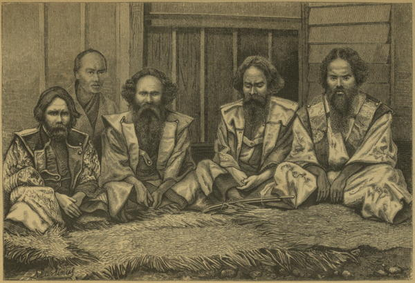

Four Ainu men and one Japanese man
Our Life in Japan (1869)
On going on shore [at Hakodate] the next day, I found it to be the third and closing day of one of the greatest of Japanese fêtes. ... All the inhabitants were dressed out in their best, and their hair freshly combed and greased; the women were radiant in scarlet and blue, and the officials in gray and black silks and crapes. ... The streets were crowded with gazers, the temples were crammed with strangers from the country, and the bonzes must have reaped a rich reward by their entertainment.
The most interesting of all the groups was a family of Ainos, or Hairy Kuriles, as they are sometimes called. They had come with many more from the interior of the island, to witness the fêtes. The heads of the males were shaved, and the hair arranged in Japanese fashion; those of the women, so unlike the Japanese, looked as if they had been dragged through a bush. They glided timidly and swiftly through the crowd, which jeered and hooted at them, till they seemed frightened out of their wits, and hurried into the temple which had been set apart for them.
Japan, the Amoor, and the Pacific (1861)
Before reaching Yurup we passed through a settlement of Ainos, a remarkable race, which is shrinking steadily in numbers before the superior civilization of their rulers. Those of this people whom we saw had been long in close contact with the Japanese, but we were told that they did not differ much from those in the interior. They are of medium stature, and tolerably strong and compact build. The face is broad, the forehead rather low, the nose short, and oftener slightly concave, in profile, than straight. Their eyes differ decidedly from the Mongolian type in shape, and are black. Their color is perhaps a little darker than that of the Japanese; the smallest children are white.
But the most remarkable characteristic of this people, in which they differ from all other races of eastern Asia, is the luxuriant growth of their hair, which is straight, long, and glossy. The men have heavy beards of great length, and moustaches of such dimensions that they form a curtain which has to be raised to gain access to the mouth in eating. The whole body is more hairy than in other races.
The women are short, tattoo their chins, and wear large earrings. The Japanese look upon the Ainos with contempt, and give to them a curious origin. According to a traditional myth, the wife of a pre-historic Mikado was banished from Nipon for infidelity. After a long wandering, she found herself alone on the island of Yesso. Here there appeared to her a dog, which became her sole companion, and from the union of this pair there sprang the Aino race. But notwithstanding the degraded position which they are now able to assign to this people, the Ainos were able during more than a thousand years to maintain a vigorous defensive warfare. ... At present they are a mild, good-natured race, and the early European navigators in the Pacific found no terms too strong in praising the simple habits and virtues of this people.
As we passed through the village we met several men who saluted us in the Aino manner, by stroking their long beards and lowering their hands gracefully from their mouths. The houses or huts are built of poles, covered with brush or rushes; they are rectangular on the ground, and curve at the sides and ends upward to the ridge-pole; each hut is fenced about with reeds. Near each of them is a small building, raised about eight feet from the ground on posts, and serving as a store-house for fish, sea-weed, and so forth. Before many of the dwellings I observed the skulls of bears raised on long poles.
Across America and Asia (1870)
◀ ClassesCompared with Chinese ▶